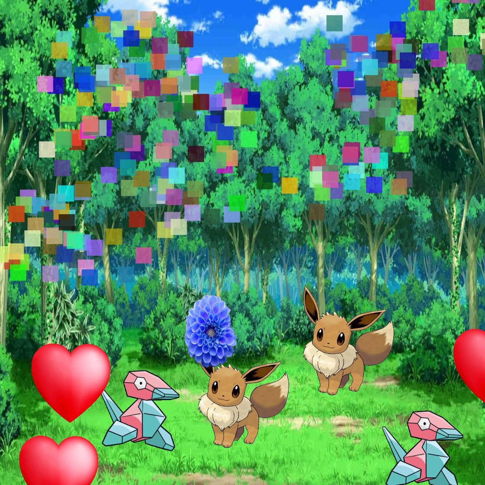

This is my DIY Photoshop Program. I titled it Pop of Joy because it has joyful colored drawing tools and Pokemon image stamps because Pokemon brings Joy.
Keys 1-5 are colored thick drawing lines, Keys 6-9 are stamp images, Key 0 is confetti.
var img2;
var img3;
var img4;
var img5;
var bg;
var initials ='tk'; // your initials
var choice = '1'; // starting choice, so it is not empty
var screenbg = 240; // off white background
var lastscreenshot=61; // last screenshot never taken
function preload() {
img2 = loadImage('https://tanyak-art.github.io/images/eevee.png');
img3 = loadImage('https://tanyak-art.github.io/images/porygon.png');
bg = loadImage('https://tanyak-art.github.io/images/background.png');
img4 = loadImage('https://tanyak-art.github.io/images/heart2.png');
img5 = loadImage('https://tanyak-art.github.io/images/blueflower.png');
}
function setup() {
createCanvas(600, 600); // canvas size
image(bg,0,0,600,600); // use our background screen color
}
function draw() {
if (keyIsPressed) {
choice = key; // set choice to the key that was pressed
clear_print(); // check to see if it is clear screen or save image
}
if (mouseIsPressed){
newkeyChoice(choice); // if the mouse is pressed call newkeyChoice
}
}
function newkeyChoice(toolChoice) { //toolchoice is the key that was pressed
// the key mapping if statements that you can change to do anything you want.
// just make sure each key option has the a stroke or fill and then what type of
// graphic function
// Drawing Tools (1-5)
if (toolChoice == '1' ) { // first tool
strokeWeight(15);
stroke(144, 213, 255);
line(mouseX, mouseY, pmouseX, pmouseY);
} else if (toolChoice == '2') { // second tool
strokeWeight(15);
stroke (255, 105, 180);
line(mouseX, mouseY, pmouseX, pmouseY);
} else if (toolChoice == '3') { // third tool
strokeWeight(15);
stroke(90, 242, 24);
line(mouseX, mouseY, pmouseX, pmouseY);
} else if (toolChoice == '4') {
strokeWeight(15);
stroke (138,0,196);
line(mouseX, mouseY, pmouseX, pmouseY);
} else if (toolChoice == '5') {
//image(img2, mouseX, mouseY, 150, 150);
strokeWeight(15);
stroke(255, 255, 102);
line(mouseX, mouseY, pmouseX, pmouseY);
// Image Stamps (6-9)
} else if (toolChoice == '6') {
image(img3, mouseX, mouseY, 100, 100);
} else if (toolChoice == '7') {
image(img2, mouseX, mouseY, 150, 150);
} else if (toolChoice == '8') {
image(img5, mouseX, mouseY, 100, 100);
} else if (toolChoice == '9') {
image(img4, mouseX, mouseY, 100, 100);
// Random Tool (0)
} else if (toolChoice == '0') {
fill(random(255), random(255), random(255), 200);
noStroke();
rect(mouseX + random(-50,50), mouseY + random (-50,50), 20, 20);
}
}
function clear_print() {
// this will do one of two things, x clears the screen by resetting the background
// p calls the routine saveme, which saves a copy of the screen
if (key == 'x' || key == 'X') {
//background(screenbg); // set the screen back to the background color
image(bg,0,0,600,600);
} else if (key == 'p' || key == 'P') {
saveme(); // call saveme which saves an image of the screen
}
}
function saveme(){
//this will save the name as the intials, date, time and a millis counting number.
// it will always be larger in value then the last one.
filename=initials+day() + hour() + minute() +second();
if (second()!=lastscreenshot) { // don't take a screenshot if you just took one
saveCanvas(filename, 'jpg');
key="";
}
lastscreenshot=second(); // set this to the current second so no more than one per second
}